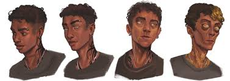

Ordem Paranormal😁
O elemento Conhecimento
é considerado
o melhor elemento de Ordem Paranormal🧐

"O Conhecimento é a entidade da consciência. Descobrir, aprender, conhecer, decifrar.
Ter a própria percepção do Outro Lado e suas entidades agrada o elemento de Conhecimento.
A razão e lógica do Conhecimento reintegram e suprimem o caos da Energia."
Sobre:
O Conhecimento foi o terceiro elemento a ser apresentado, através do Ritual de Transcender e dos Escriptas em Ordem Paranormal:
Desconjuração. Apesar de essa ter sido a sua introdução mais direta, ele já havia aparecido
em O Segredo na Floresta na forma de Sigilos de Conhecimento no Símbolo Espiral de Santo Berço.
Ele deve manter o equilíbrio para que a Realidade suscite um propósito.
Esse elemento é caracterizado por descobrir, decifrar, entender e aprender, além de estar ligado diretamente aos "Sussurros do Conhecimento".
As cores que representam esse elemento são branco e tons de amarelo.
O comportamento da Entidade de Conhecimento parece estar conectado diretamente com a ideia de descobrir, lembrar,
aprender e registrar informações.
Acontecimentos que foram uma grande fonte de Medo, registrados em textos, palavras ou até Sigilos, agradam
e fortalecem a entidade do Conhecimento.
Compreender o Conhecimento por completo seria o equivalente a saber absolutamente tudo do Outro Lado.
Ao transcender com 55% de Exposição Paranormal, Carina Leone se comunica com a entidade de Conhecimento. Ela se vê na imensidão infinita do Medo
escutando um ruído familiar que fica cada vez mais alto, beirando o insuportável. Esse ruído era, na verdade, composto por milhões de vozes que estavam
gritando em um coro desesperador e maligno, ao mesmo tempo sussurrando palavras, possibilidades, pesadelos e histórias.